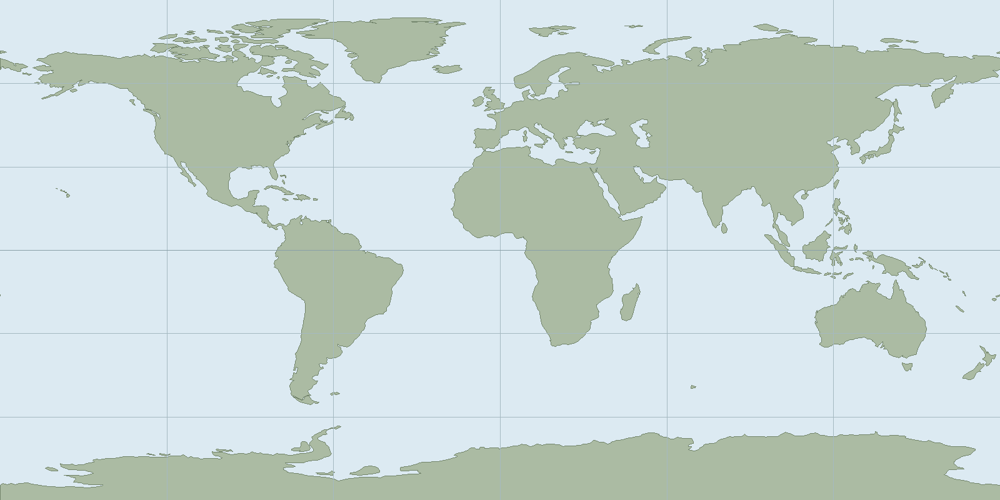

Where Is the ISS?
I'm still at my desk. This thing keeps moving.
Follow the International Space Station as it travels around Earth.
Waiting to find the space station...

Latest position
- Latitude
- --
- Longitude
- --
- Altitude
- --
- Speed
- --
Auto update: on, every 15 seconds.
Getting the latest position...
Position time (UTC): waiting for data.